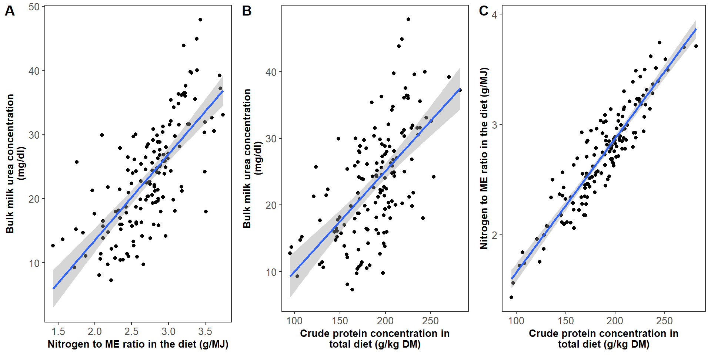
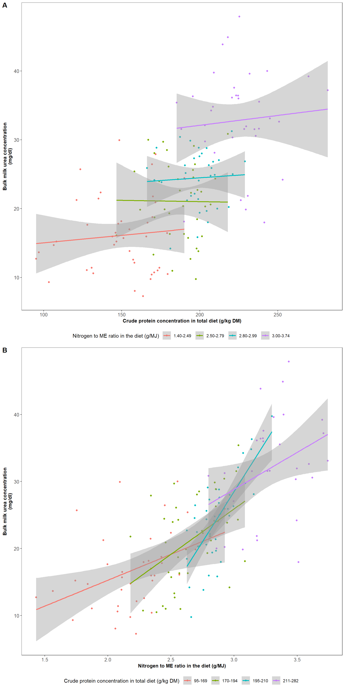

Chapter 4 Objective 6: Explore relationships between N:ME ratio, crude protein, and bulk milk urea
The objective is to explore the relationships between nitrogen to ME ratio in the diet, crude protein concentration in total diet, and bulk milk urea (BMU) concentration.
4.1 Methods
BMU was simply plotted against crude protein, with separate plots and lines of best fit for each of four approximately equally sized categories of N:ME ratio.
4.2 Results
Figure 1. Relationships between A) bulk milk urea concentration and nitrogen to ME ratio in the diet, B) bulk milk urea concentration and crude protein concentration in total diet, and C) nitrogen to ME ratio in the diet and crude protein concentration in total diet, calculated from Hills Laboratory data, in a study of bulk milk urea concentrations on 38 New Zealand dairy farms.

There are clear positive associations between all three pairs of variables. Nitrogen to ME ratio in the diet and crude protein concentration in total diet are clearly very strongly correlated.
Figure 2. Relationships between A) bulk milk urea concentration and crude protein concentration in total diet at different categories of nitrogen to ME ratio in the diet, and B) bulk milk urea concentration and nitrogen to ME ratio in the diet at different categories of crude protein concentration in total diet, calculated from Hills Laboratory data, in a study of bulk milk urea concentrations on 38 New Zealand dairy farms.

The first plot shows that BMU increases by only a small amount with crude protein concentration within each category of N:ME ratio, and the gradient is consistent, while it clearly increases as N:ME ratio increases. On the other hand, the second plot shows that BMU increases more steeply with N:ME ratio and the gradient is not consistent across crude protein categories. BMU increases slightly across crude protein categories. This plot is reminiscent of the plot between BMU and N:ME ratio across categories of total nitrogen intake in objective 2.